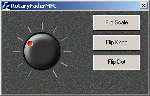

Title: RotaryFaderMFC Author: Frank Luchs Email: development@visiomedia.com Environment: VC++ 6.0, NT 4.0, Win95/98/2000 Keywords: MFC, Control, CSliderCtrl, Bitmap Level: Description: A CSliderCtrl using 3 bitmaps for scale, knob and dot Section Miscellaneous Controls SubSection Range Selectors

This is the second article in a serie
called: Virtual Instruments.
The serie will show you how to enhance your application's GUI with bitmap based controls.
You'll find the workspace for all demos under the directory
/visiomedia/products/virtualinstrumentsmfc.
Please skip loading of project files not yet found by the workspace. The CVMLinearFaderCtrl
from the first article is currently not available.
A Rotary Fader
This article is about a rotary slider/fader control. It is derived from the MFC CSliderCtrl
and supports bitmaps for scale, knob and dot.
The CVMRotaryFaderCtrl can be used
based on the following:
CVMRotaryFaderCtrl class
to your project.
CVMBitmap.
CSliderCtrl
to CVMRotaryFaderCtrl .These steps are outlined in detail as folllows:
In your dialog or formview class create a standard windows slider control and
set an ID, say IDC_FADER1
Now open the class wizard to associate a control variable, say m_Fader1 with the slider. Manually edit the class
name of this member
definition in your dialog header file from CSliderCtrl
to CVMRotaryFaderCtrl.
CVMLinearFaderCtrl m_Slider1If you do not like using DDX then you can just subclass the control:
m_Slider1.SubclassDlgItem(IDC_SLIDER1, this);
How do we load the bitmaps?
We don't want to use bitmaps from the applications resource file. Instead we
use the LoadImage function to load them
directly from a file. These files must exist in the same folder as our .exe
file. In our project settings we have specified a bin folder as working
directory. All images go there.
pszBitmapFile = _T("rotaryscale22a151x.bmp");
m_hBitmap[Scale1] = (HBITMAP)::LoadImage(NULL, pszBitmapFile, IMAGE_BITMAP, 0,0,LR_LOADFROMFILE);
In our dialog's header file we setup an HBITMAP array and an enum for clarity. So nothing gets mixed up even when we use lots of images. We close the enum with a BitmapCount and use this value to specify the array size. With the loading code in the dialog, we can load images once and attach them to multiple controls.
enum eHBITMAP
{
Background,
Scale1,
Knob1,
Dot1,
Scale2,
Knob2,
Dot2,
BitmapCount
};
HBITMAP m_hBitmap[BitmapCount];
We also use an enum to specify which bitmap we want to attach to an individual part of our control.
m_Rotary1.SetBitmap(m_hBitmap[Scale1], CVMRotaryFaderCtrl::Scale); m_Rotary1.SetBitmap(m_hBitmap[Knob1], CVMRotaryFaderCtrl::Knob); m_Rotary1.SetBitmap(m_hBitmap[Dot1], CVMRotaryFaderCtrl::Dot);
You can call the method SetBitmap at
any time. With the flip buttons of our application we can change the scale, the
knob and the dot in any combination at runtime. SetBitmap will recalculate the
layout of the control based on the size of the bitmaps, but sometimes you might
want to specify some parameters individually, for instance the radius of the dot
position.
How can I make my own bitmaps?
Look at these bitmaps to get an idea:
| SCALE | KNOB | DOT | |
|
|
The knob and the dot are masked. We use pink as transparent color. When designing knobs and dots, you have to make sure, that the borders of the visible parts have a clear separation from the transparent, pink parts. Otherwise you would get ugly artefacts.
Where can I get ready-to-use bitmaps?
If you don't feel like an artist, you may want to use free bitmaps from
Visiomedia Virtual Instruments.
Instead of using LoadImage, you can import bitmaps with more than 256 colors, but Visual Studio's editor can't handle those bitmaps. You have to edit them outside with a graphics application like Photoshop.
How do I set the controls value?
You can interact with the mouse. By design this will only work on the y-axis.
By moving the mouse up and down the current value gets updated. This kind of
movement is more naturally for the common user than the rotary mouse movement
seen in other rotary controls.
You also can use the keyboard. Implemented are the up/down cursors for a relative movement and the keys left, space, right, home, end for an absolute movement.
SetKnobPos(int nAbsolute); UpdateKnobPos(int nRelative);
The resulting control value lies between 30 and 330 degrees.
Restrictions:
Related articles: